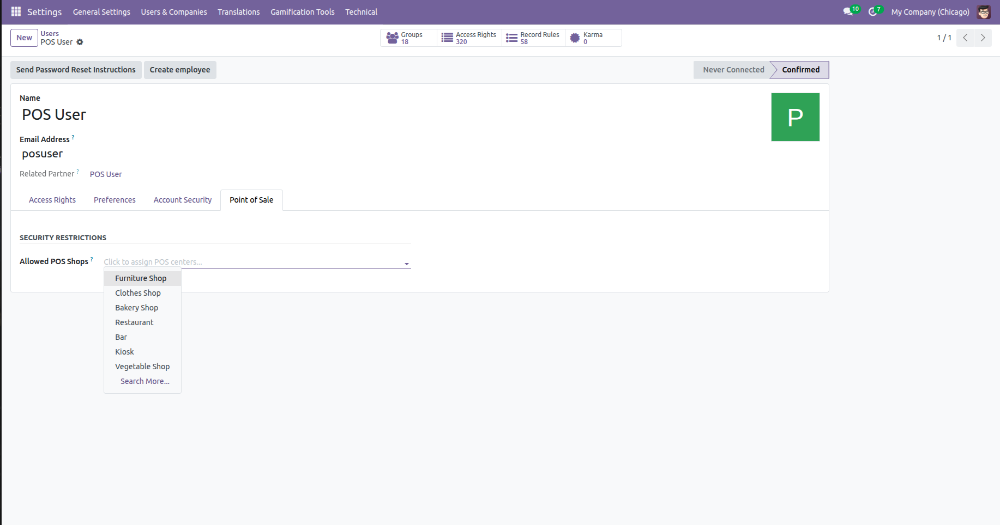
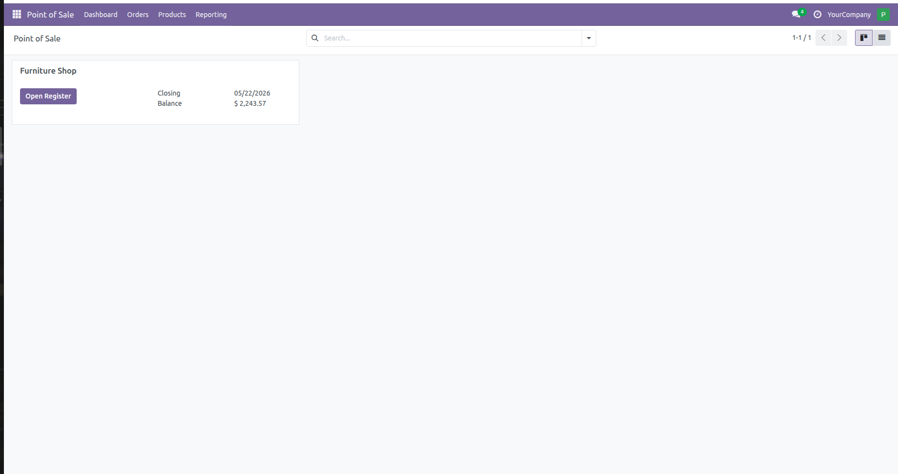
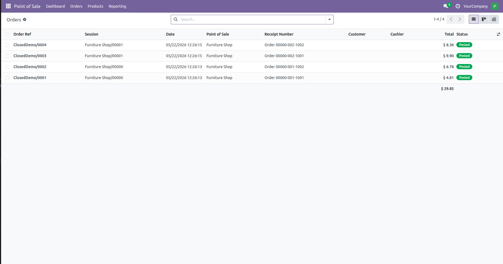

By default, granting a user 'POS User' access in Odoo allows them to view every Point of Sale configuration, access any active register session, and browse company-wide orders and payment history. For business owners managing multiple locations, branches, or franchises, this is a major security flaw. This module completely isolates user access down to the specific shops they are authorized to manage.


